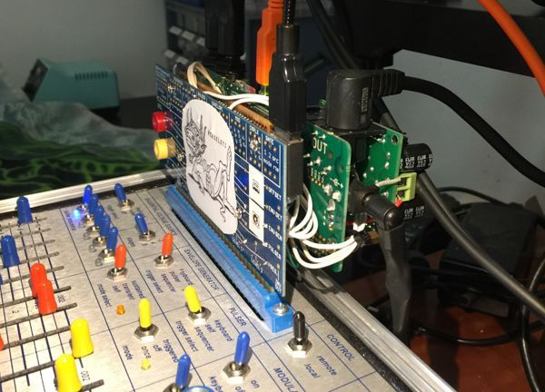

This is a project I started about 3 months ago. I've had a Buchla Music Easel for nearly a year, and wanted a way to have a looper that would be in sync with the Easel's internal rhythms. I was originally planning to use a laptop and make a midi to clock box with an Arduino, but then I discovered Axoloti!
The Easel has a program card for storing patches. It uses an edge connector that accesses the voltages and pulses in and out for the synth. I decided to piggyback an Axoloti on to it so that I could have control between the Easel and the Axo in both directions.
A slight difficulty is that the Easel voltages are 0-10v and the Axo is 0-3.3v. So I used perf board to make some voltage dividers to go from Easel to Axo, and to mount an opamp and Synovatron GtPulse boards to go the other way. I also scabbed on a +/- 12v power supply that powers the opamp, the GtPulses and the Axo.
I'm attaching the patch I'm currently using, although I will probably develop some other patches to use with the board. It uses rbrt's 4 track looper slightly modified, some rhythm outs (including Euclideans), two effects, and button feedback interfaces for the Launch Control XL.
Thanks to the community for being such a great resource. I'm open to questions.
Karl

Updated the .axp file 11/23/16
Weasel Station 7.axp (127.2 KB)


 do u have any schematic or something over how u didt it?!
do u have any schematic or something over how u didt it?!{kind=link}